Vzhled hodnostního a vojskového označení v armádě Konfederace poměrně jasně určoval výstrojní předpis. A stejně jako v mnoha podobných případech nebyl nikdy přesně dodržován.
Dnes můžeme vycházet z dochovaných fotografií a podle nich například víme, že z více než stovky fotografovaných konfederačních desátníků měli předpisové frčky pouze dva. U stejného vzorku vojáků Unie je měli téměř všichni.
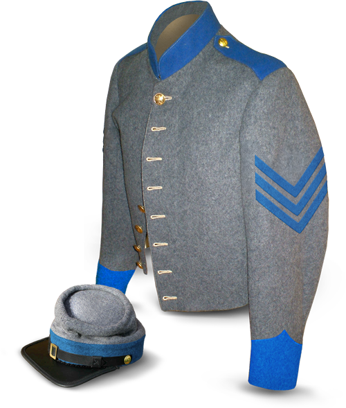
Jeden veterán od Tennesseeské pěchoty se například ve svých pamětech zmiňuje:
K odlišení příslušníků jednotlivých typů vojska byl v Konfederační armádě užíván jednoduchý systém barev, podobně jako to dělala Unie. To samozřejmě nebylo nic objevného, barevné označení tradičně používala například většina evropských armád.
V armádě Unie standartní čepicové odznaky pro odlišení zbraně (trubka-pěchota, šavle-kavalerie atd.), často doplněné číslem pluku a písmenem roty, se na straně Konfederace téměř nepoužívaly. Pokud se nějaké objevily tak to byla často písmena. I pro pěchotu, C pro kavalerii a A mělo dělostřelectvo. Surovinami se na Jihu šetřilo a mosaz samozřejmě nebyla vyjímkou. Koneckonců ani nebyly k dispozici výrobní kapacity.
Jak vypadaly barevné prvky na uniformě a na képi je vidět na obrázcích. Modrá barva patří pěchotě, červená dělostřelectvu a žlutá jízdě. Ženijní vojsko a generální štáb měl určenu barvu béžovou (buff), zdravotnická služba černou nebo tmavě zelenou.
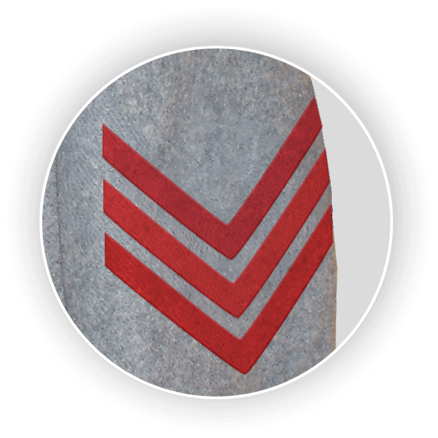
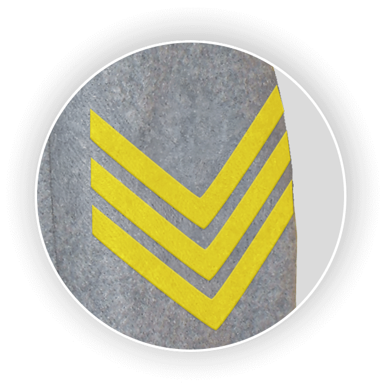
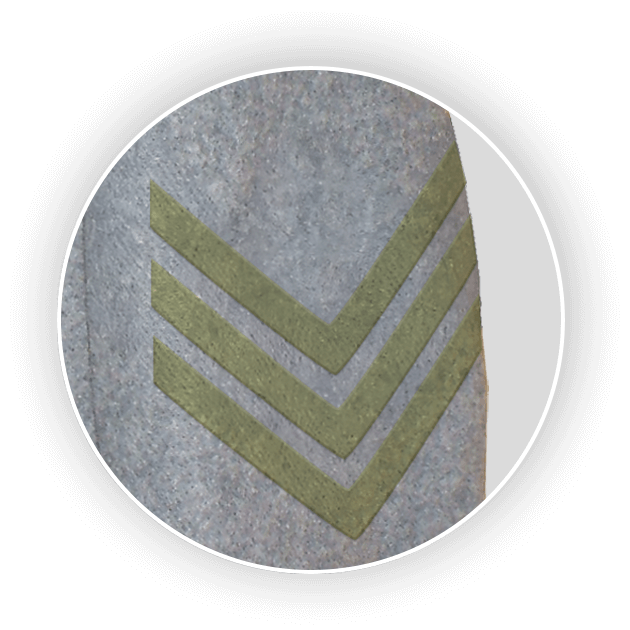
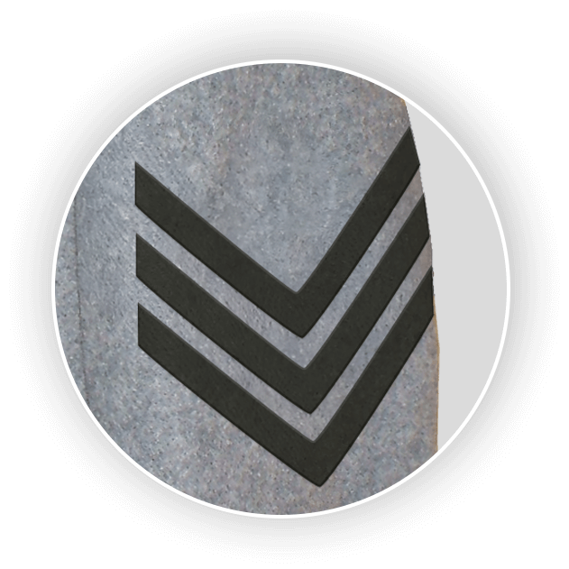

Stejně jako v případě výstroje, taktéž v insignaci neexistovala jednotnost. Odlišnosti byly dány například původem vojáka nebo datem vstupu do armády. Dochované blůzy mají například často prýmky černé barvy, protože předpisové barevné prostě nebyly k sehnání. Zdá se, že tyto nášivky byly většinou vyrobeny z proužků látky a ne z jednoho kusu materiálu jako v US Army. Na fotografiích se objevilo i několik neobvyklých rukávových nášivek. Například u jednoho kavaleristy je zřetelně vidět dekorace v podobě vzpínajícího se koně na rukávech v místech, kde by měla být hodnostní véčka.
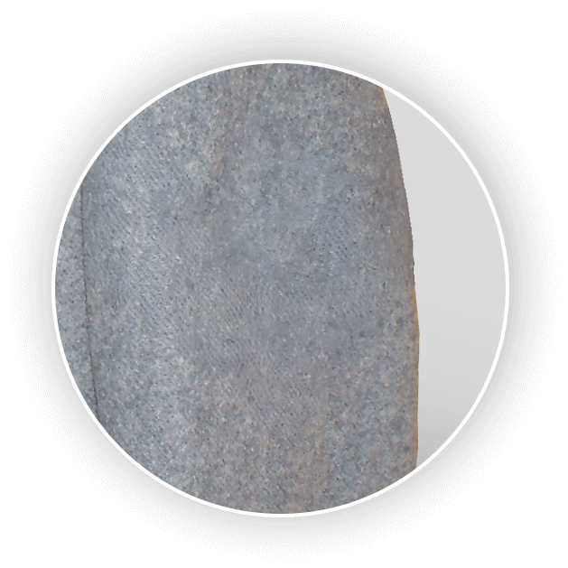
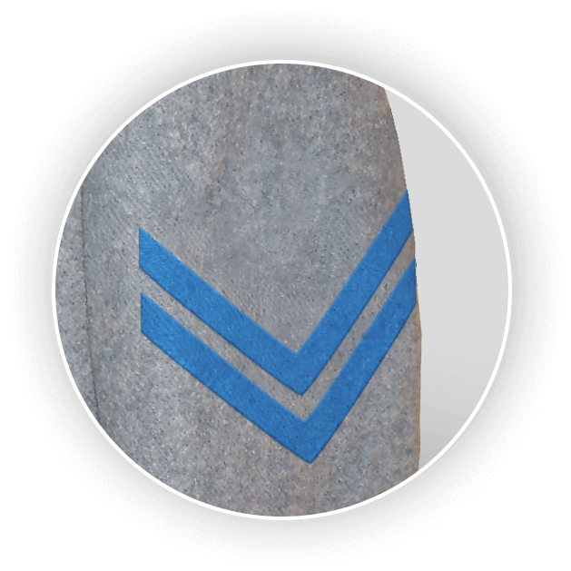
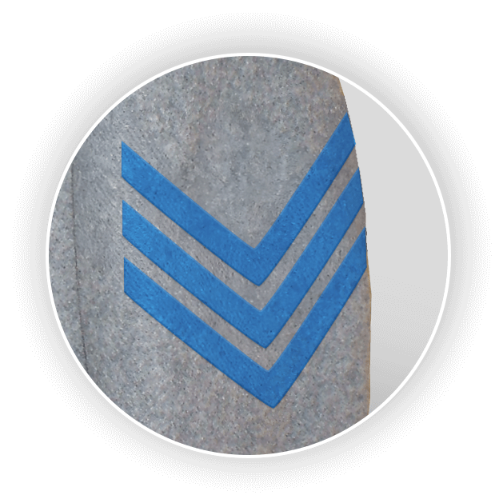
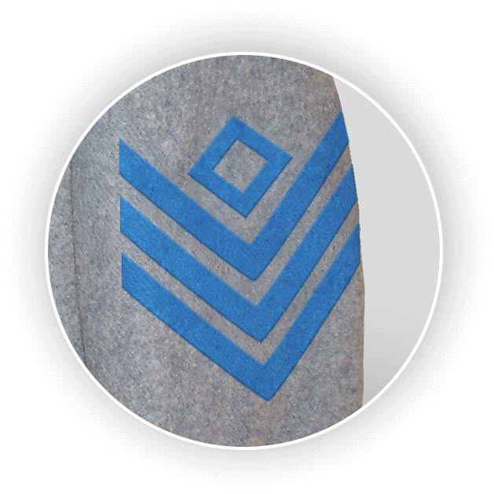
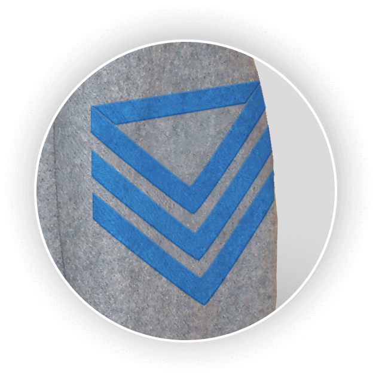
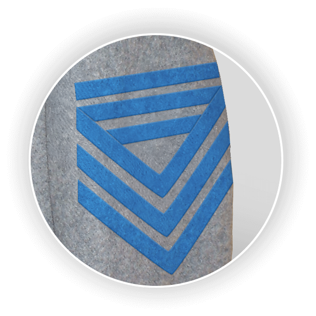
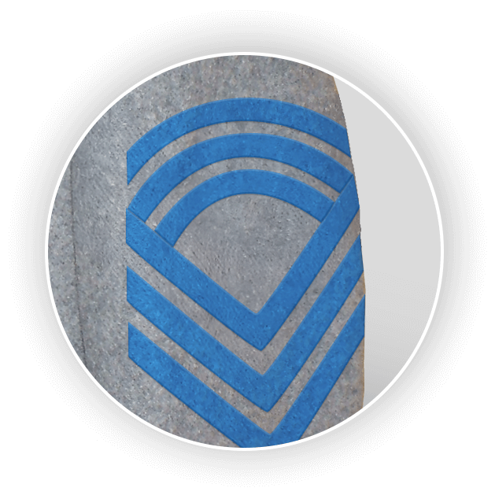
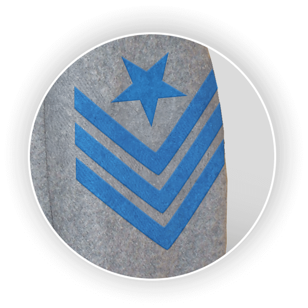
Důstojníci na tom byli z hlediska výstroje a hodnostního označení většinou mnohem lépe než obyčejní vojáci. Náklady na uniformu si velitelé hradili ze svého. Jako příslušníci vyšších společenských vrstev si to mohli dovolit a většinou si dávali záležet na předpisovém vzhledu. I tady ale existovaly rozdíly až výstřelky dané zámožností či vkusem nositele.
Také důstojnictvo bylo barevně odlišeno podle typu vojska. Na obrázku je jako vzor použita slavnostní uniforma podplukovníka s červenými doplňky, které náleží dělostřelectvu.
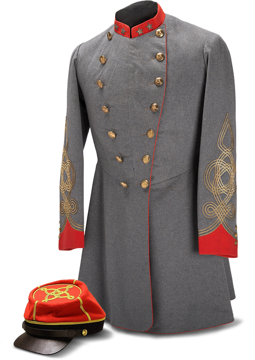
Patrně nejvýraznější součástí slavnostních uniforem konfederačních důstojníků byly takzvané rakouské, nebo též tyrolské, uzly. Tyto výšivky ze zlatých šňůr pokrývaly značnou část rukávů a zdobily i dýnko důstojnické képi. Jedna šňůra - poručíci, dvojitá šňůra - kapitán, trojitá - plukovníci, čtyři šňůry - generálové.
Jejich původ sahá k motivům z maďarských lidových krojů, odkud se dostaly na stejnokroje uherských husarů. Odtud je převzali rakousko-uherští dragouni a brzy je začala používat většina evropských armád. Obzvláště populární se staly ve Francii, například u koloniálních jednotek v severní Africe. Francie je zřejmě poslední zemí, která rakouské uzly na slavnostních uniformách a čapkách svých důstojníků stále používá. Francouzi jim ovšem říkají noeuds hongrois, tedy „maďarské uzly“.
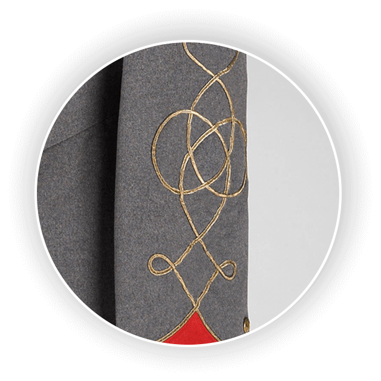
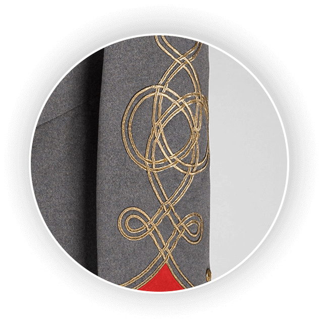
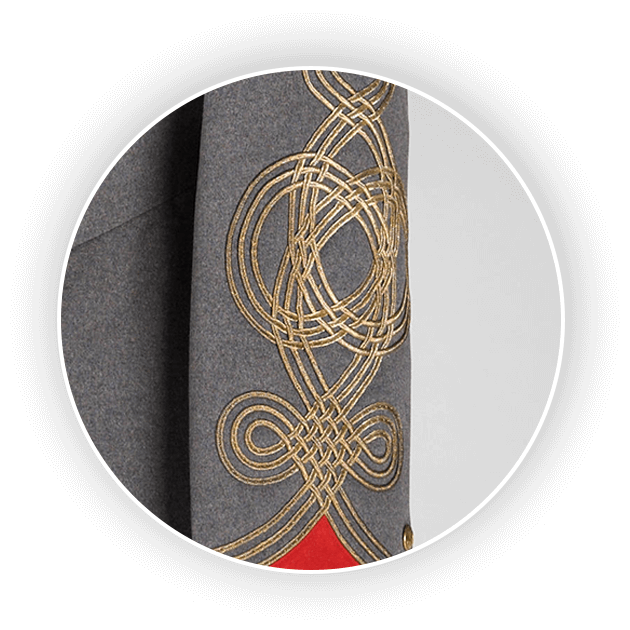
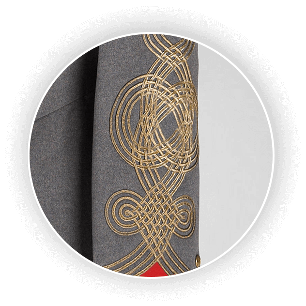
Přesnější označení vyšších důstojníků bylo umístěno na krajích stojacího límce.
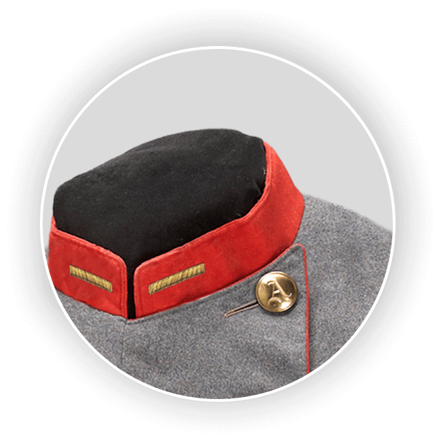
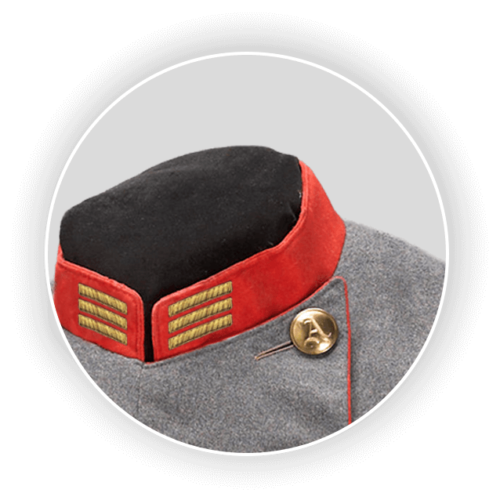
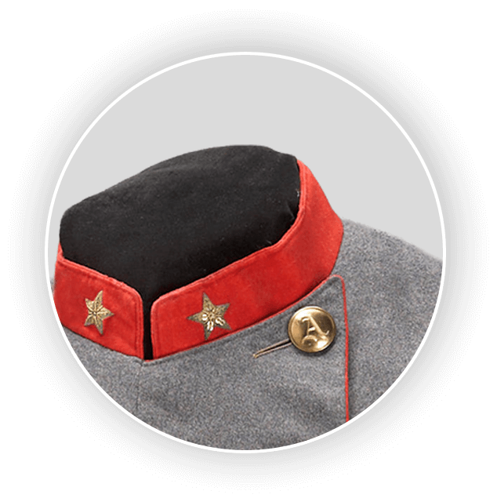
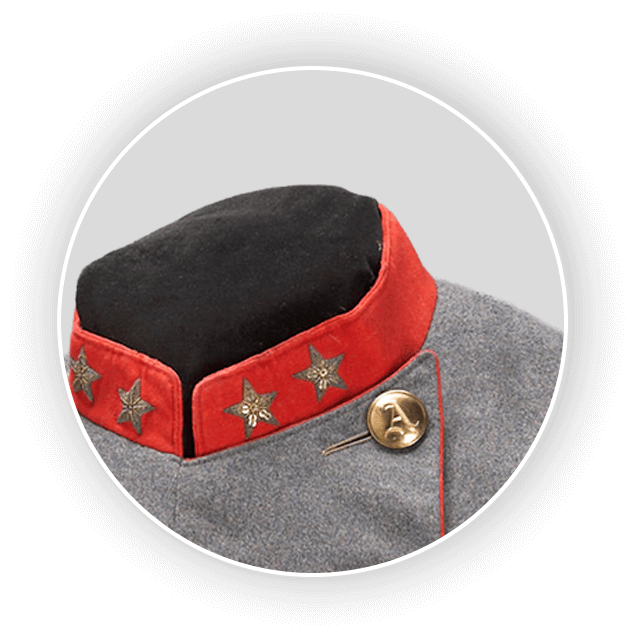
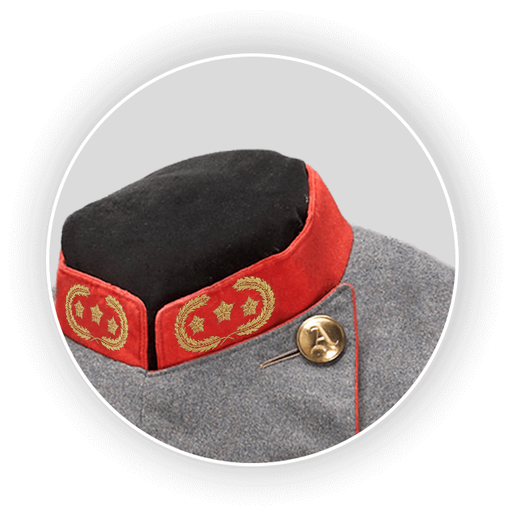